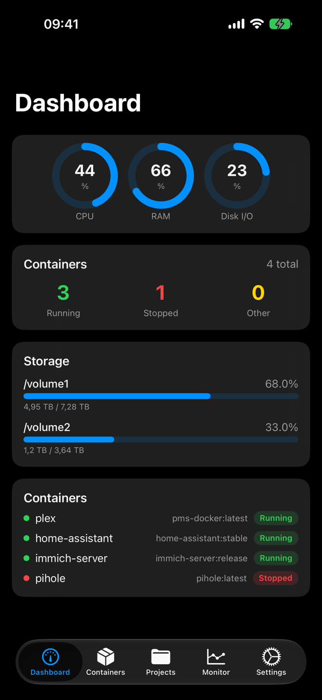
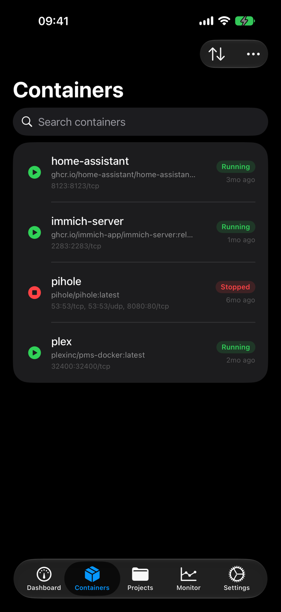
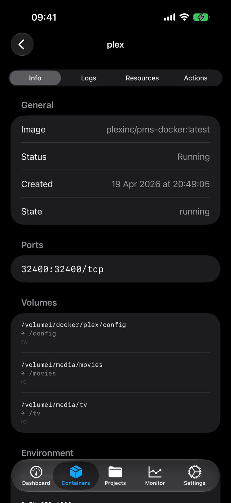
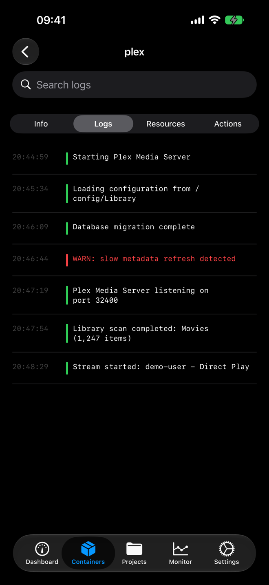
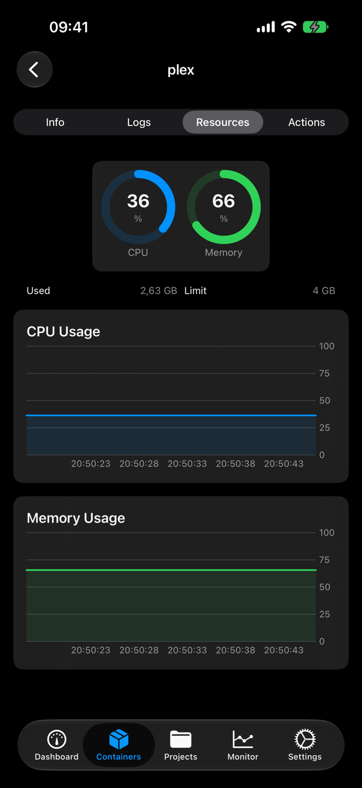
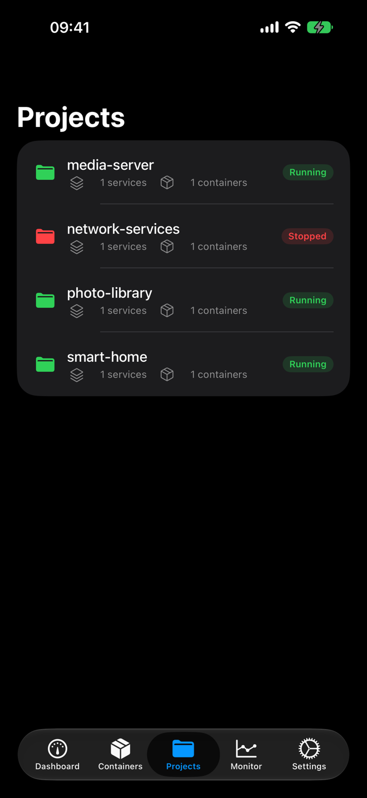
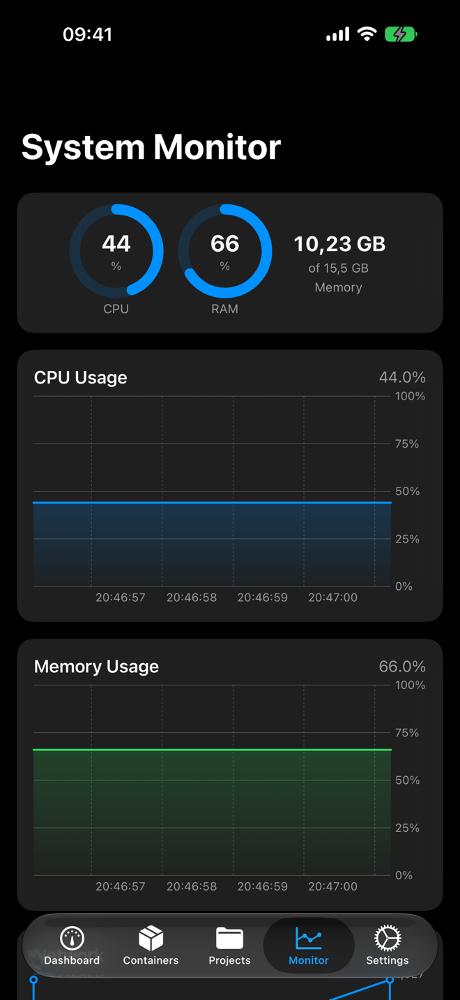
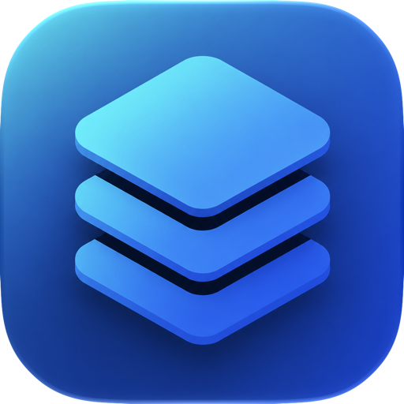

Full container control
Start, stop, restart, pause and unpause any container with a single tap. The list refreshes itself while you watch.
A native iOS control panel for the Docker containers and Compose projects running on your NAS.

Real screens from the app. Dark, fast, and built for one-handed fixes.






The things you would otherwise open DSM in a browser for.
Start, stop, restart, pause and unpause any container with a single tap. The list refreshes itself while you watch.
Health checks run in the background and push a notification the moment a container stops running.
Open any container to read its logs next to a real-time CPU and memory graph.
Bring a whole stack up or down, not just single containers.
Rolling CPU, memory and network history, drawn as charts you can read at a glance.
Save each server once and switch between them from the connection list. Sessions are restored on launch, so two-factor sign-in is not a daily ritual.
There is no service in the middle. The app connects straight to your NAS on your own network or VPN. No sign-up, no telemetry, no ads.
HTTPS, two-factor sign-in, and self-signed certificate support, because that is how real home NAS boxes are actually set up.
Credentials and sessions live in the iOS Keychain, encrypted by the system and never leaving your device.

On the App Store, with the source on GitHub.
iPhone on iOS 26 or later. Synology NAS running Container Manager on DSM 7.